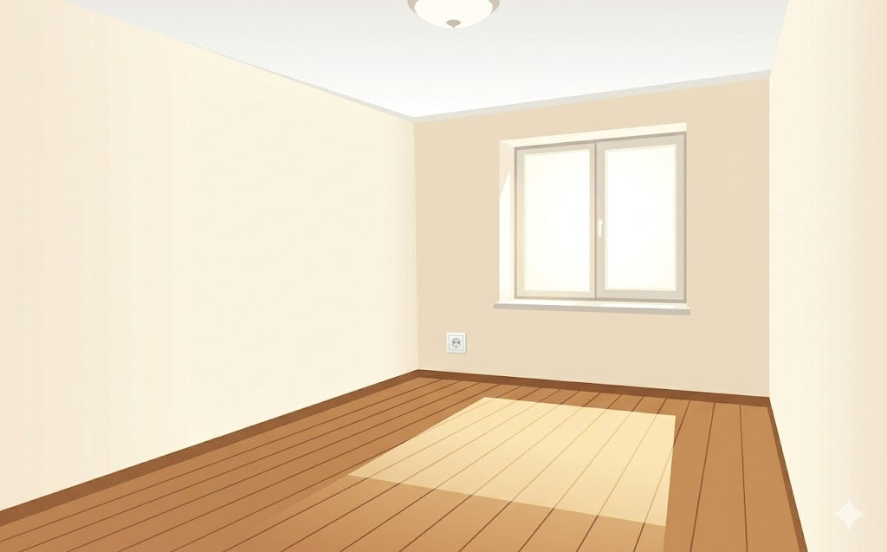

Great news! Your company has just announced a teleworking policy. You can work from home — but first, you need to get set up.
Phase 1 — Build Your Office: Your spare room is empty! Tap each piece of equipment to add it to your home office. Each item unlocks a teleworking fact.
Phase 2 — A Day in the Life: Live through a full day of teleworking. Events happen — make smart decisions!
Phase 3 — The Great Debate: Swipe statements left (disadvantage) or right (advantage).
Watch your Productivity and Satisfaction meters — your choices affect both!
🛠️ Phase 1: Build Your Office0 / 7 addedScore: 0
📈 Productivity
50%
😊 Satisfaction
50%

📦 Empty Room — Start Adding Equipment!
Tap each item below to build your home office
📅 Phase 2: A Day in the LifeScore: 0
📈 Productivity
50%
😊 Satisfaction
50%
09:00
Morning — Starting work
💬 Phase 3: The Great Debate0 / 10Score: 0
Swipe or drag each statement: ← Disadvantage or Advantage →